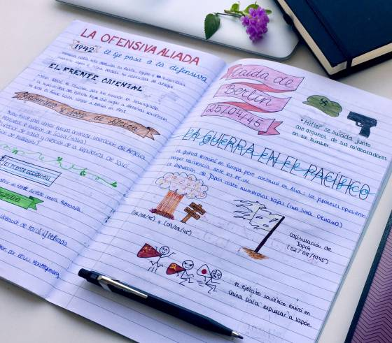
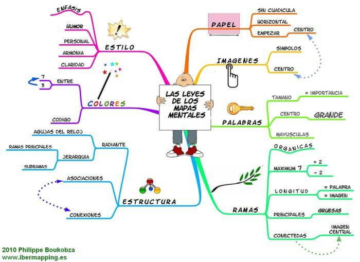
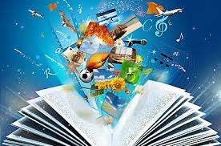

- 
- 

- 
Introducción
La comunicación humana surge por diferentes necesidades, tales como el contacto, la persuasión y la expansión. En primer término, por la
urgencia de comunicar a otros sus pensamientos, sentimientos, angustias o necesidades básicas: compartir. En el segundo caso,
predomina la urgencia de modificar los pensamientos de los demás y hacerlos coincidir con el propio: persuadir. En el tercero, la
tendencia de perpetuar la hegemonía como ser natural: informar.
Aunque en un principio la comunicación no fue oral, los gestos, los movimientos corporales, los símbolos y las representaciones murales, ya
presagiaban un tipo de comunicación más elaborado. Las técnicas de expresión son la herramienta esencial para el estudio de la comunicación oral y
escrita y así conocer de qué elementos se compone y la gran importancia que tiene en nuestros días. Es además de presentar los elementos básicos que
forman parte del proceso de la comunicación.
 Las técnicas de expresión son la herramienta esencial para el estudio de la comunicación oral y escrita y así conocer de qué elementos
se compone y la gran importancia que tiene en nuestros días. Es además de presentar los elementos básicos que forman parte del proceso de la
comunicación.
Las técnicas de expresión son la herramienta esencial para el estudio de la comunicación oral y escrita y así conocer de qué elementos
se compone y la gran importancia que tiene en nuestros días. Es además de presentar los elementos básicos que forman parte del proceso de la
comunicación.
La vida moderna cada vez más dinámica nos exige estar en comunicación con un número mayor de personas en diferentes ámbitos, por lo que nuestra
habilidad para comunicarnos influirá de forma definitiva en el éxito de nuestras tareas, de ahí la importancia de comprender las formas y
estructuras de la comunicación.
La expresión oral y escrita, como herramientas, constituyen los elementos básicos para incorporarnos a la sociedad y el mundo del trabajo, así
como hoy en día es un asunto imprescindible para el éxito y su permanencia en los mercados. El lenguaje es el elemento más importante que le ha
permitido al hombre el desarrollo de nuestro mundo.